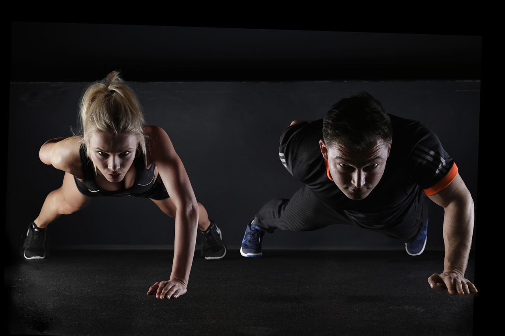
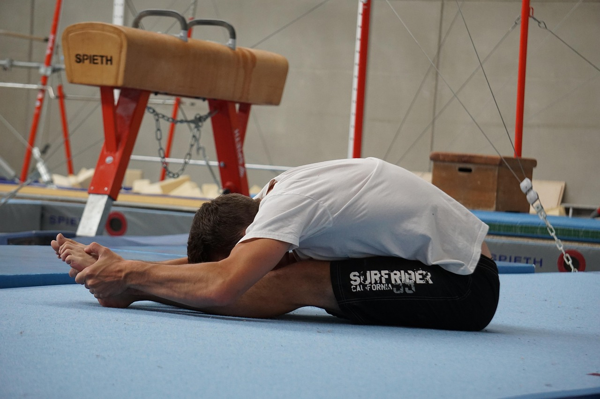

Manfaat Kalistenik untuk Tubuh
Kalistenik adalah jenis latihan fisik yang menggunakan berat badan sendiri sebagai resistensi untuk membangun
kekuatan otot, meningkatkan fleksibilitas, dan memperbaiki postur tubuh. Latihan ini tidak memerlukan peralatan
khusus sehingga dapat dilakukan di rumah, taman, atau tempat terbuka lainnya. Kalistenik tidak hanya efektif
tetapi juga ekonomis.
Dengan latihan rutin seperti push-up, pull-up, squat, dan lunge, kalistenik mampu memperkuat otot inti (core),
dada, lengan, dan kaki. Selain itu, koordinasi, keseimbangan, serta kelincahan tubuh akan meningkat seiring
waktu. Kalistenik juga membantu pembakaran lemak tubuh lebih efektif karena sebagian besar gerakannya termasuk
latihan fungsional dan intensitas tinggi.
Keunggulan lain dari kalistenik adalah fleksibilitas dalam variasi latihan. Anda dapat menyesuaikan tingkat
kesulitan sesuai kemampuan dan progres tubuh Anda. Ini menjadikannya pilihan ideal baik bagi pemula maupun
atlet berpengalaman.
3 Latihan Dasar Kalistenik untuk Pemula

Memulai kalistenik tidak harus sulit. Ada tiga gerakan utama yang dapat Anda praktikkan sejak hari pertama:
push-up, squat, dan plank. Push-up membantu memperkuat otot dada, bahu, dan trisep. Lakukan dengan menjaga
posisi tubuh tetap lurus dari kepala hingga tumit, dan turunkan dada mendekati lantai secara perlahan.
Squat sangat efektif untuk membentuk otot paha, betis, dan gluteus. Pastikan posisi lutut tidak melewati
ujung kaki saat menurunkan badan, dan jaga punggung tetap tegak. Latihan ini membantu memperkuat bagian bawah
tubuh dan memperbaiki postur berdiri.
Plank adalah latihan isometrik yang menargetkan otot inti. Dengan posisi mirip push-up, tetapi dengan lengan
bawah sebagai tumpuan, Anda cukup menahan posisi selama mungkin. Plank meningkatkan stabilitas tubuh dan
mencegah nyeri punggung bawah. Lakukan ketiga latihan ini secara rutin 3–4 kali seminggu untuk hasil maksimal.
Pentingnya Pemanasan dan Pendinginan

Seringkali orang melewatkan bagian pemanasan dan pendinginan dalam sesi latihan, padahal dua bagian ini sangat
penting untuk menjaga kesehatan tubuh secara menyeluruh. Pemanasan membantu mempersiapkan tubuh secara fisik
dan mental, meningkatkan suhu otot, serta melancarkan sirkulasi darah menuju otot yang akan digunakan.
Contoh pemanasan ringan meliputi jogging di tempat, arm circles, atau jumping jacks selama 5–10 menit.
Pemanasan yang baik akan meningkatkan efektivitas latihan dan menurunkan risiko cedera otot atau sendi.
Setelah latihan selesai, jangan langsung berhenti. Lakukan pendinginan seperti stretching statis dan
pernapasan dalam. Pendinginan membantu detak jantung kembali normal secara bertahap, mengurangi penumpukan
asam laktat, serta mempercepat pemulihan otot. Dengan konsistensi dalam pemanasan dan pendinginan, performa
latihan Anda akan meningkat dan tubuh tetap aman dari cedera.